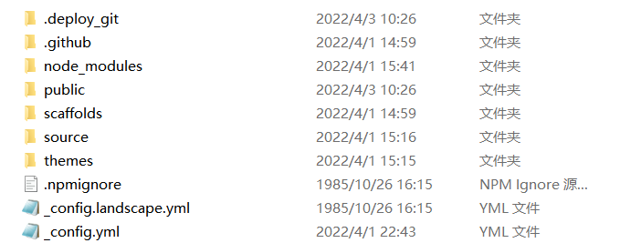
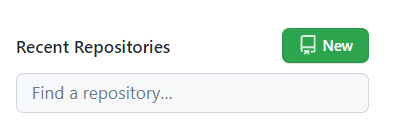
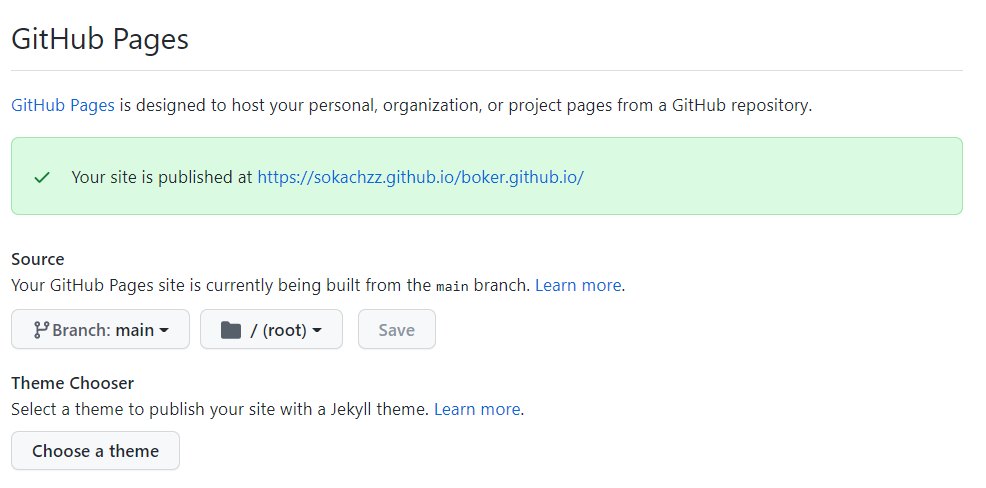
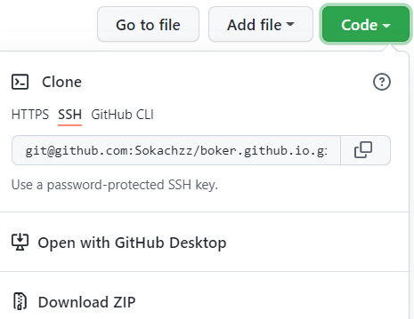
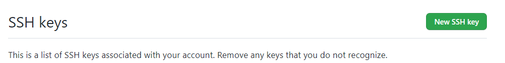

Hexo博客搭建
此文记录了我第一次通过hexo框架搭建博客的一些心得，介绍了Hexo博客的搭建方法和一些使用方法，会持续在这里更新一些新学到的hexo使用方法。
准备阶段
安装node.js,Git
https://nodejs.org/dist/v4.2.3/node-v4.2.3-x64.msi
https://github.com/git-for-windows/git/releases/download/v2.11.0.windows.3/Git-2.11.0.3-64-bit.exe
安装完成后，需要将git,node.js,npm都设置为环境变量，将三者的绝对路径复制到环境变量的设置中，具体操作可以百度。
设置完环境变量可以通过命令行中进行如下的输入来判断是否安装成功以及安装的版本信息。
1 | |
安装Hexo
在这里踩了很大的坑，一开始搜了很多教程，跟着网上的这些教程做的过程中报了很多错，可能与我git和node.js以前下载过，后来重新下载位置改变有关，在这里就卡了很久，后来发现在hexo的官方网站上有一些一键部署指令，很简洁并且一次就成功了。只需要在命令行中输入如下指令即可。
初始化hexo基础配置文件
1
npm install hexo-cli -g初始化hexo，并且建立在blog文件夹中
1
hexo init blog进入到blog文件夹中
1
cd blog配置node
1
npm install加载hexo基础html、css、js等文件
1
hexo generate //hexo g开启本地服务器
1
hexo server
输入完最后一条指令之后，hexo会开启一个本地服务器，并且会给你一个本地服务器的url，将这个url复制到你的浏览器中，可以看到hexo默认配置的静态网页，这时你的博客就可以算是在本地搭建完啦。
hexo文件

主要会用到以下三个文件
- config.yml
- 用于修改网站配置，配置设定，网站的标题，网址等。
- 可以搜索官方文档具体使用。
- source 资源
- 用于存放原始资源的地方，自己上传的图片，markdown文章等。
- 其中_posts文件夹中存放的是那些要上传到网站上的资源。
- themes 主题
- 用来存放主题的文件夹。
- 会根据主题解析source文件夹中的档案来生成静态页面。预设主题为landscape。
安装主题
下载
在hexo官网中你可以找到很多博客主题，我选择的是fluid主题。点击图片可以进行预览，点击标题就会进入下载界面，将下载下来的压缩包解压到先前提到的themes主题文件夹中，一般下载的主题都会有专门的用户文档描述使用方法，可以在主题存放的github仓库的readme 文档中找到，解压下来的文件夹需要重命名为主题名。
设置
设置主题是在hexo根目录下的config.yml文件中，修改themes属性。例如：
1 | |
修改
你可以自主修改主题中的很多配置，在主题对应的用户文档中都会有详细的使用说明，修改主题主要是在你主题文件夹下的config.yml文件里。需要注意的是，该config.yml文件与根目录中的config.yml文件是不同的，这个文件是用来配置主题相关属性的，对于二者重叠的属性修改，主题文件夹下的config.yml具有更高的优先级。
部署到GitHub
建立GitHub仓库
Step1.注册GitHub账号并登录
- 需要注意的是，GitHub作为国外网站，在国内登录时会出现加载很慢或者直接无法进入网站的情况。
- 我是通过挂梯子解决这个问题的，网上可以搜到一些教程修改本地设置也可以成功登录，我试过没成功，就再没试过了。
Step2.点击New新建一个github仓库

step3.进入到你的github仓库中，点击settings->pages，在Source里将branch设置为main，然后点击save，可以看到上方的绿色框中会生成一个url网址，这就是你未来的博客网址了。

将内容上传到GitHub
Step1.安装Git相关套件
这一步需要回到hexo根目录中，在终端命令行中输入以下命令
1 | |
Step2.修改_config.yml文件的deployment设置
需要主要的是这里的_config.yml指的是根目录中的文件
1 | |
这一步可以说是我踩过最大的坑了，这里的repository使用的url应当是ssh形式的，如下图所示，并且，这里的url不能直接复制，使用github的ssh需要本地有对应的ssh密钥，应当先设置一个自己的ssh密钥，然后才能上传自己的内容到github中。

github的ssh密钥的设置
在命令行中输入如下指令，会在你的电脑本地生成一个rsa文件，这个rsa文件用于生成自己的ssh密钥.
1
ssh-keygen -t rsa -C "youremail@example.com"你只需要把里面的邮箱地址换成你自己的邮箱地址即可.
然后共有三次输入，第一次为你rsa文件的名字，二三次是密码的设置.
然后在C-user-.ssh文件夹中，可以找到一个rea.pub文件,打开文件复制里面的内容.
右上角点击头像->settings->SSH and GPG key->new key生成一个自己的ssh密钥.

Step3.输入部署指令
这三条指令在你每次修改完博客要重新上传文件时，都需要使用。
1 | |
这样,你的hexo博客部署就已经完成啦,将github仓库中生成的你的url输入浏览器中,你就可以看到自己的博客啦!